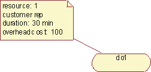
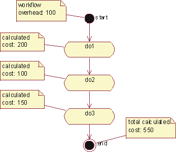
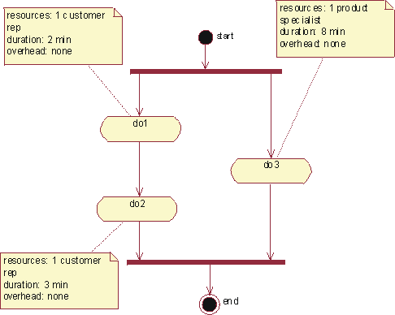
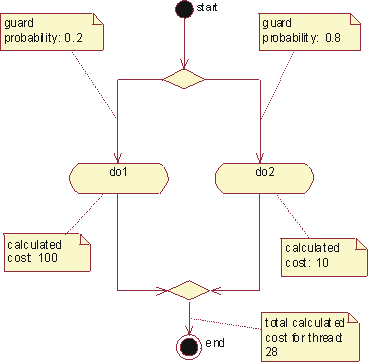
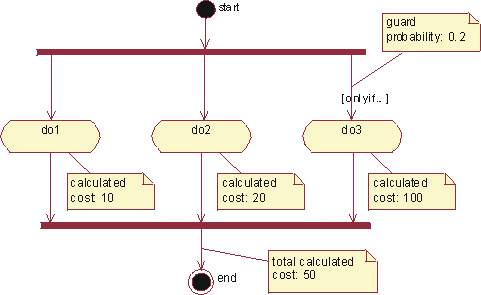

Concepts:
Activity-Based Costing
Topics
Note: Portions of this content are drawn from the user's guide
for the Rational Rose Activity-Based Costing Link, a product developed and sold
by Ensemble Systems (http://www.ensemble-systems.com/).
Activity-based costing (ABC) is a methodology that measures the cost
and performance of activities, resources, and cost objects. Resources are
assigned to activities, then activities are assigned to cost objects based on
their use. Activity-based costing recognizes the causal relationships of cost
drivers to activities [PLR99].
Activity-based costing is about:
-
Measuring business process performance, activity by activity.
-
Estimating the cost of business process outputs based on the cost of the
resources used in producing the product.
-
Identifying opportunities to improve process efficiency and
effectiveness. Activity costs are used as the quantitative measurement. If
activities have unusually high costs or it they don't add value, they become
targets for re-engineering.
Activity-based management (ABM)
is a broad discipline that focuses on achieving customer value and company
profit by managing activities. ABM draws on activity-based costing as a major
source of information.
To calculate the performance of a business process, you need to know what the
workflow is and what type of resources are involved in performing the workflow.
You need to have the following elements describing the workflow in place before
you can start measuring:
Basic Cost Drivers
For each activity state in an activity diagram, the basic cost drivers
are:
- Resources: determine what business workers and business entities
are participating, and how many instances of each. The allocation of a
resource to a workflow implies a certain cost.
- Cost rate: each business worker or business entity instance may
have a cost per time in use.
- Duration: an activity occurs for a certain time, therefore a
resource can either be allocated for the duration of the activity, or for a
fixed amount of time.
- Overhead: any fixed costs that the invocation of a workflow or an
activity would incur.
Additionally, for a transition you may need to determine the Guard
Probability, which is the probability for a transition to be traversed. This
needs to be determined for alternative threads such as outgoing transitions from
a decision, and for conditional threads such as a conditional transition
outgoing from a synchronization bar.
Calculating the Cost of Performing a Workflow
A workflow is described with a collection of activity states. For each of
those activity states, you must define what the cost drivers are, in order to
calculate the total cost for performing the activity.
Example:

The total cost of performing this activity is 'number of
resources' * 'resource cost' * ' duration' + 'overhead cost'. Knowing that
the cost rate for using a customer representative is 200 per hour, the total
cost for this activity is then 1*200*0.5 + 100=200.
The total cost of performing the workflow is the sum of the cost for each
activity, although there is often an overhead associated with initiating the
workflow. For the whole workflow, it may be interesting to calculate the total
duration or frequency.
Example:

The workflow depicted in this activity graph has an
overhead cost that needs to be added to the cost of performing each
activity.
Concurrent Threads
If concurrent threads exist in an activity diagram, the duration of the
longest thread is the relevant duration for all threads. Concurrent threads are
shown using synchronization bars.
Example:

The total duration for these two concurrent threads is 8
minutes, which is the duration of the longest thread in this case.
Alternative Threads
If alternative threads exist in an activity diagram, the cost for the
alternative threads are calculated as the sum of the cost for each alternative,
weighted with the occurrence probability for each alternative. Alternative
threads are shown using decision icons.
Example:

The total calculated cost for a thread with alternatives
is the weighted cost of the alternative threads.
Conditional Threads
If a conditional thread exists, the cost for that thread is added to the cost
for its parallel threads, weighted with the probability of it occurring. A
conditional thread is indicated with a guard condition on a transition.
Example:

If there is a conditional thread, its cost is first
weighted with the probability of it occurring, and then added to the cost of its
parallel threads.
Nested Activity Graphs
If an activity has a sub-graph, the cost of that activity is the cost of the
activities in the sub-graph.
Activity-based costing is often used to compare alternatives, such as
proposed change versus current practice, or to compare different proposed
changes. There are three kinds of parameters to work with to explore differences
between alternative flows:
- Changing values of cost attributes without changing the structure or
realization of the workflow; for example, assuming shorter time durations.
- Changing structure of the workflow; for example, changing from sequential
to concurrent execution of activities.
- Changing what resources are used in the realization of the workflow; for
example, merging resources to eliminate hand-offs.
To compare these alternatives, you may create "sibling" activity
diagrams to show the variations of the business use case. When changing what
resources are used in the realization of the workflow, you must also establish
"sibling" realizations of the workflows to correctly explore resource
costs.
Copyright
© 1987 - 2001 Rational Software Corporation
|  Disciplines >
Disciplines >
 Business Modeling >
Business Modeling >
 Concepts >
Concepts >